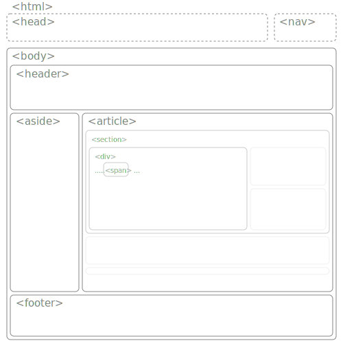

서론
html이 권장하는 문서 구성은 다음과 같습니다.
- head(옵션): 문서의 meta정보를 제공 (문서의 성격, 스킨, 브라우저에 표시할 제목, 아이콘 등)
- nav(옵션): 문서와 연계된 내용을 제공(시리즈, 상위구조 등)
- body: 본문
작성된 내용의 성격을 브라우저에 알려주려면 테그tag라는 문법syntax을 사용해야 합니다.
테그
- 테그tag는 꺽쇠(< >)와 예약어reserved word로 이루어져 있습니다.(<예약어>)
예)표 예약어: table
그림 예약어: img
새 문단 예약어: p
밑줄 예약어: u - 테그는 열기(<예약어>)와 닫기(</예약어>)가 있어야 합니다.
예외: 줄바꿈 (<br/> 또는 <br>) - 엘리먼트element는 다른 테그의 콘텐츠content가 될 수 있습니다.
예) <p><u>안녕</u>하시오</p>안녕하시오
실습상자
아래 입력 상자에 다음을 이어 붙여 봅시다.
|
안녕하세요. 홍길동입니다.
|
다음 테그를 연습해봅니다.
- i: itatlic 이텔릭체
- b: bold 굵은 글씨
- u: underline 밑줄
- del: delete 취소선
속성
속성을 부여할 때 따옴표(")를 사용한다는 점에 주의하십시오. 일부는 따옴표 없이 동작하지만, 오동작을 방지하려면 따옴표를 작성하는것이 권장됩니다.
실습상자
파란색이나 녹색으로 적용해 봅시다. 색이름('red', 'blue')을 넣거나 색코드('#0F0', '#00FF00')을 넣을 수 있습니다. 색코드는 RGB(Red Green Blue)순으로
#000
또는
#000000 입니다.
#000은 검정색, #FFF는 하얀색입니다.
|
이것은 빨간색입니다.
|
기본 속성
줄바꿈 속성: 테그의 종류에 따라서 줄바꿈이 자동으로 일어나기도 하고(예:p, h1, h2 등), 줄바꿈이 일어나지 않는 테그(font, q, span, u 등)이 있습니다. 줄바꿈이 되거나 되지 않는 이유는 기본값 설정을 따르기 때문이며, 언제든지 변경이 가능합니다.
여백 속성: 대부분의 테그는 본연의 크기와 여백을 가지고 있습니다. 테두리border를 기준으로 테두리 안쪽의 여백을 padding, 바깥쪽의 여백을 margin이라고 합니다.
on/off속성: checked, open, disabled 등
실습 상자
margin과 padding, border의 크기를 조절해가며 어떠한 차이가 있는지 알아봅니다.
|
이것은
글자 입니다. |
실습
아래는 강의노트를 다운받는 방법을 소개합니다. 아래주소의 github에 업로드된 예제코드를 다운받으십시오.
줄바꿈
A_basic >> b_newline.html코드 내에서 아무리 줄 바꿈을 해도 브라우저에 반영되지 않습니다. 대신 <br> 또는 <br/> 테그를 이용하여 줄 바꿈 할 수 있습니다.
주석
A_basic >> c_comment.html 주석comment는 프로그래머가 프로그램을 파악하기 위한 용도로 넣는 해설입니다. 따라서 주석 안에 있는 코드는 동작하지 않습니다.
주석은 <!--으로 시작하여 -->으로 끝납니다.
특수기호
A_basic >> d_symbol.html
html을 작성하다보면, 어떤 특수문자를 문법으로 인식할 것인지 문자로 인식할 것인지 구분해야 할 때가 있습니다.
예를들어, "<"는 테그를 시작하는 문법이기도 하지만, 부등식에서는 '보다 작다(less then)'를 의미하는 문자이기도 합니다. 따라서, html에서 부등호 문자 "<"를 입력하기
위해서 "<"로 작성해야 합니다.
[부록: 특수문자 테이블]
특수 기호 조회 상자 :
자세한 내용은 다음 등에서 참고 할 수 있습니다.(사실상 < &정도만 쓰게 됩니다. 큰 의미는 없습니다.)
(https://www.w3.org/Math/testsuite/build/main/Characters/EntityNames/a-full.xhtml)
head 속성
A_basic >> e_title.html, f_head.htmlHTML문서에 대한 추가적인 정보를 제공합니다.
- charset: HTML 문서에서 사용되는 문자 인코딩을 지정합니다.
- lang: HTML 문서에서 사용되는 언어를 지정합니다.
- viewport: 모바일 디바이스에서 HTML 문서의 화면 크기를 조정합니다.
- description: HTML 문서에 대한 요약 설명을 제공합니다.
- keywords: HTML 문서에 대한 키워드를 제공합니다.
- author: HTML 문서의 저자를 지정합니다.
- robot: 검색엔진 수집봇의 제한을 설정할 수 있습니다. [상세정보]
revisit-after: 검색 주기를 설정합니다.(예:"7 days")
<meta name="viewport" content="width=device-width, initial-scale=1.0, minimum-scale=1.0, maximum-scale=1.0, user-scalable=no">
테그의 종류
| Tutor | 종류 | 테그 | 설명 |
|---|---|---|---|
| 문서의 구성 | header, nav, main {article > section > div > span}, aside, footer, (thead, tbody, tfoot) | 헤더: (header, 문서에 보이지 않는) ▶ 상위 메뉴(navigation bar) ▶ 메인컨텐츠(main > article > section > div > span를 다양하게 하위
섹션으로
구성 할 수 있습니다.) ▶ sidebar(메인에 추가되기도 함) ▶ 하단(footer) (t...) 자동생성 됨. |
|
| a | 제목 | h1, h2, h3, h4, h5, h6 | h1이 가장 큰 제목, h6가 가장 작은 크기의 제목입니다. |
| 단락 | p, dl {dt, dd}, Blockquote |
한 단락(구역, paragraph)을 설정합니다. 서술(description)리스트에 제목(term;서술)과 내용(definition;정의)를 구분할 수 있습니다. <dl> <dt>단락</dt> <dd>글의 토막</dd> <dl> 인용구(Blockquote)는 인용을 단락으로 구분할 때, 사용됩니다. |
|
| b | 줄 바꿈 | br, hr | 줄 바꿈(break line), 수평선(horizental line) |
| c | 리스트 | ol, ul, { li } | 순서(order)가 있는 리스트나, 순서없는(unorder)리스트 모두 세부내용은 li 테그를 사용합니다. |
| d | 강조 | em, i, cite, address, strong, b, u, abbr, q, del | Emphasis(em)는 이텔릭체(italic, i)로 보여줍니다.(cite, address 동일효과) strong은 굵게(bold, b), u는 밑줄(underline)을 의미합니다.(abbr은 점선 밑줄(acronym속성은 표준에서 제외됨)) 따옴표(quotation)테그는 앞뒤에 따옴표를 추가합니다. 취소선(delete)는 |
| e | 링크 | a | 엥커(anchor, 닻)을 사용하기 위해서는 href=""속성을 사용합니다. 새 탭에서 열기 위해서는 target="_blank"를 사용합니다. donwload를 부여(on/off)하면 클릭시 다운로드 합니다. 같은 페이지 안에서 움직이려면 href="#..."으로 이동이 가능합니다.예: 테그보기 |
| f | 첨자 | sub, sup | 아래 첨자(Subscript), 윗 첨자(Superscript) |
| g | 특수표현 | pre, code, var, kdb, samp, time | pre코드는 특수합니다. 띄어쓰기, 줄 바꿈 등의 표현을 그대로 표현해 줍니다. code, var등은 간격이 일정한 폰트(monospace나 D2Coding등으로 변경)또는 배경색을 바꿔줍니다. time은 datetime속성으로 시간 정보를 정규포멧으로 저장 할 수 있습니다. |
| h | 테이블 | table { tr > { th, td }, colgroup > col, caption} | table: 테이블을 생성합니다. tr: 열(row)을 생성합니다. th: 머릿칸(header)을 만듭니다. td: 칸(division)을 만듭니다. colgroup: 세로줄(column)을 컨트롤 할 준비합니다. col: 세로줄 컨트롤러를 생성합니다. caption: 표1.xxx와 같이 표시됩니다. |
| i | 멀티미디어 | img, picture, video, audio {track}{source} | 그림, 비디오, 오디오 등을 출력합니다. track을 이용하여, 자막(subtitles, caption, description)등을 작성할 수 있습니다. source의 각미디어의 하위로 특성으로 여러개을 지정할 수 있으며, 이는 사용자의 호환성에 맞을 때까지 순차적으로 시도합니다. srcset속성을 이용 할 수도 있고, source[media]에 특성을 걸 수 있다.(참고) |
| j | 임베디드 (삽입) |
iframe은 대부분의 다른 문서(사이트)등을 참조하는데 사용됩니다. 캔버스 튜토리얼, SVG 튜토리얼을 참고하십시오. |
|
| k | 입력형식 | input, button | 입력형식에 따라, text, slider, checkbox, radio, number, password등이 있습니다. |
구조
전체 구조
C_structure >> a_paragraphs.htmldiv
C_structure >> b_div.htmldiv테그는 문서 안에 특정 영역을 할당합니다. 이 위치는 절대적 위치일 수도 있고, 상대적 위치일 수도 있습니다. 또한 영역안에 복수의 영역을 할당하는 것도 가능합니다.
영역에 대하여
C_structure >> c_box_model.html지금까지 언급되었던 모든 테그를 그려보면, 기본적으로 부여된 속성이 다를 뿐, 다 같은 논리구조로 짜여져 있는 것을 알 수 있습니다. 이 말인즉은, 속성을 바꾸면 서로 다른 테그조차 동일하게 작동 할 수 있다는 의미가 됩니다. 그렇다고 지금까지 학습한 내용이 무의미한 것은 아닙니다. table, a, img, iframe등 독자적인 기능을 하는 테가가 있고, 비슷한 테그라도 적절히 사용한다면 코드관리가 쉬워집니다.